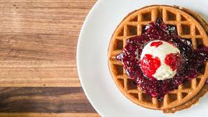

Early Years Historians have traced waffles as far back as Ancient Greece, when flat cakes were cooked between two metal plates. They weren’t sweet and they were customized with designs. Later, the Catholic Church developed a similar recipe of unleavened wafers to serve after meals as a symbolic blessing. It wasn’t until the Crusades that new versions were developed. 15th Century Gradually, spices, leavening agents, and creamier toppings were added to the waffle. They became thicker, doughier, and spiced with cinnamon and ginger. In the 1400s, the Dutch created rectangular metal plates with a grid pattern—the precursor to today’s waffle irons. 18th Century Waffles continued spreading across Europe as each country developed its own recipes. Germany’s coffee variety became popular, while French cooks used cloves, wine, and lemon zest. At the time, these delicious treats weren’t served fs
